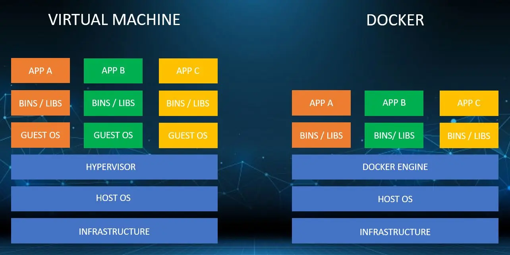

1. Introduction to Docker and Containerization
Docker is an open-source platform that enables developers to package applications and their dependencies into standardized units called containers.
Containerization is a lightweight alternative to full machine virtualization that:
- Packages software in isolated environments
- Shares the host OS kernel
- Runs consistently across different infrastructures
Key concepts:
- Images: Read-only templates for creating containers
- Containers: Runnable instances of images
- Docker Engine: The runtime that manages containers
2. Benefits of Using Docker
| Benefit | Description |
|---|---|
| Portability | Runs identically on any system with Docker installed |
| Efficiency | Containers share the OS kernel, using fewer resources than VMs |
| Isolation | Applications run in separate, secure environments |
| Scalability | Easy to scale services horizontally |
| Consistency | Eliminates "works on my machine" problems |
| Fast Deployment | Containers start in seconds |
3. Docker vs Virtual Machines

| Feature | Docker Containers | Virtual Machines |
|---|---|---|
| OS | Shares host OS | Requires full guest OS |
| Startup Time | Seconds | Minutes |
| Performance | Near-native | Slight overhead |
| Disk Usage | MBs (layered images) | GBs (full OS) |
| Isolation | Process-level | Hardware-level |
| Use Case | Microservices, CI/CD | Legacy apps, full OS needs |
4. Docker Architecture

Docker System Components
- Docker Client: CLI interface (
dockercommand) to interact with the Docker daemon. - Docker Host: Runs the Docker daemon and manages containers.
- Registry: Central repository to store and distribute Docker images (e.g., Docker Hub, private registries).
5. Key Docker Components
Docker Core Components
| Component | Description |
|---|---|
| Docker Engine | Core runtime (dockerd) |
| Images | Immutable templates (e.g., nginx:latest) |
| Containers | Runnable instances of images |
| Volumes | Persistent data storage |
| Networks | Isolated communication channels |
| Dockerfile | Blueprint for building images |
| Docker Hub | Public image repository |
6. Docker CLI Commands
üê≥ Image Management
docker pull nginx # Download image
docker images # List images
docker rmi nginx # Remove image
docker build -t myapp . # Build from Dockerfile
Container Management
docker run -d -p 80:80 nginx # Run container
docker ps # List running containers
docker stop <container_id> # Stop container
docker rm <container_id> # Remove container
docker exec -it nginx bash # Enter running container
Volume Management
docker volume create myvol # Create volume
docker volume ls # List volumes
docker volume inspect myvol # View volume details
Network Management
docker network create mynet # Create network
docker network ls # List networks
docker network inspect mynet # View network details
7. Dockerfile Syntax and Example
Common Instructions
| Instruction | Purpose |
|---|---|
| FROM | Base image |
| WORKDIR | Working directory |
| COPY | Add files |
| RUN | Execute commands |
| EXPOSE | Document ports |
| CMD | Default command |
Example Dockerfile
# Multi-stage build for Java app
FROM maven:3.8-jdk-11 AS build
WORKDIR /app
COPY pom.xml .
RUN mvn dependency:go-offline
COPY src/ ./src/
RUN mvn package
FROM openjdk:11-jre
WORKDIR /app
COPY --from=build /app/target/myapp.jar .
EXPOSE 8080
CMD ["java", "-jar", "myapp.jar"]
8. Kubernetes Deployment
Definition
Kubernetes is a container orchestration system that automates deployment, scaling, and management of containerized applications.
Full-Stack Example
Backend Dockerfile (Spring Boot):
FROM maven:3.8-jdk-11 AS build
WORKDIR /app
COPY pom.xml .
RUN mvn dependency:go-offline
COPY src/ ./src/
RUN mvn package -DskipTests
FROM openjdk:11-jre
WORKDIR /app
COPY --from=build /app/target/backend.jar .
EXPOSE 8080
CMD ["java", "-jar", "backend.jar"]
Frontend Dockerfile (Angular):
FROM node:16 AS build
WORKDIR /app
COPY package*.json ./
RUN npm install
COPY . .
RUN npm run build
FROM nginx:alpine
COPY --from=build /app/dist/frontend /usr/share/nginx/html
EXPOSE 80
Kubernetes Deployment (k8s-deployment.yml):
apiVersion: apps/v1
kind: Deployment
metadata:
name: backend
spec:
replicas: 2
selector:
matchLabels:
app: backend
template:
metadata:
labels:
app: backend
spec:
containers:
- name: backend
image: myrepo/backend:latest
ports:
- containerPort: 8080
env:
- name: DB_HOST
value: "mysql-service"
---
apiVersion: v1
kind: Service
metadata:
name: backend-service
spec:
selector:
app: backend
ports:
- protocol: TCP
port: 80
targetPort: 8080
type: LoadBalancer
---
apiVersion: apps/v1
kind: Deployment
metadata:
name: frontend
spec:
replicas: 2
selector:
matchLabels:
app: frontend
template:
metadata:
labels:
app: frontend
spec:
containers:
- name: frontend
image: myrepo/frontend:latest
ports:
- containerPort: 80
---
apiVersion: v1
kind: Service
metadata:
name: frontend-service
spec:
selector:
app: frontend
ports:
- protocol: TCP
port: 80
targetPort: 80
type: LoadBalancer
---
apiVersion: apps/v1
kind: Deployment
metadata:
name: mysql
spec:
selector:
matchLabels:
app: mysql
template:
metadata:
labels:
app: mysql
spec:
containers:
- name: mysql
image: mysql:5.7
env:
- name: MYSQL_ROOT_PASSWORD
value: "password"
ports:
- containerPort: 3306
volumeMounts:
- name: mysql-persistent-storage
mountPath: /var/lib/mysql
volumes:
- name: mysql-persistent-storage
persistentVolumeClaim:
claimName: mysql-pv-claim
---
apiVersion: v1
kind: PersistentVolumeClaim
metadata:
name: mysql-pv-claim
spec:
accessModes:
- ReadWriteOnce
resources:
requests:
storage: 5Gi
Service Interaction
- Frontend (Angular) makes API calls to
backend-service - Backend (Spring Boot) connects to
mysql-service - Kubernetes DNS resolves service names automatically
9. Docker Networking Types
| Network Type | Description | Use Case |
|---|---|---|
| Bridge | Default network (NAT) | Single-host communication |
| Host | Shares host's network | High-performance needs |
| Overlay | Multi-host network | Swarm/Kubernetes clusters |
| Macvlan | Assigns MAC addresses | Legacy apps needing MAC access |
10. Docker Volumes
| Volume Type | Description | Use Case |
|---|---|---|
| Named | Managed by Docker | Persistent data |
| Anonymous | Auto-removed | Temporary data |
| Bind Mount | Host directory | Development mounts |
| tmpfs | Memory-only | Sensitive temp data |
| ------------------ | ------------------------ | -------------------------- |
11. Docker Logs and Inspection
docker logs <container> # View logs
docker logs -f <container> # Follow logs in real-time
docker exec -it <container> bash # Enter container's shell
docker inspect <container> # Detailed container info
docker stats # Show live resource usage
12. Docker Security Best Practices
- Use official images from trusted sources
- Run containers as non-root user:
USER appuser
- Scan images for vulnerabilities
- Limit container capabilities:
docker run --cap-drop=ALL --cap-add=NET_BIND_SERVICE
- Use secrets for sensitive data
- Keep Docker Engine and images updated
13. Docker in CI/CD
Typical CI/CD Pipeline:
- Code commit triggers build
- Docker image is built and tested
- Image pushed to registry
- Kubernetes deploys new version
- Automated rollback if tests fail
GitHub Actions snippet:
- name: Build and push
uses: docker/build-push-action@v2
with:
push: true
tags: user/app:latest
14. Dockerfile Best Practices
- Use
.dockerignoreto exclude unnecessary files - Order instructions from least to most frequently changed
- Use multi-stage builds to reduce image size
- Pin versions for base images and dependencies
- Minimize layers by combining
RUNcommands - Use smallest suitable base image (e.g., Alpine Linux)
15. Cleanup Commands
docker system prune # Remove unused objects
docker system prune -a # Remove all unused images
docker volume prune # Remove unused volumes
docker network prune # Remove unused networks
docker rm $(docker ps -aq) # Remove all stopped containers
16. Conclusion: Why Docker is Essential
Docker has become fundamental to modern DevOps because it:
- Standardizes application packaging and deployment
- Enables microservices architecture
- Facilitates CI/CD pipelines
- Improves development/production parity
- Optimizes resource utilization
- Simplifies scaling and orchestration (with Kubernetes)
When combined with Kubernetes, Docker provides a complete solution for building, shipping, and running distributed applications at scale.